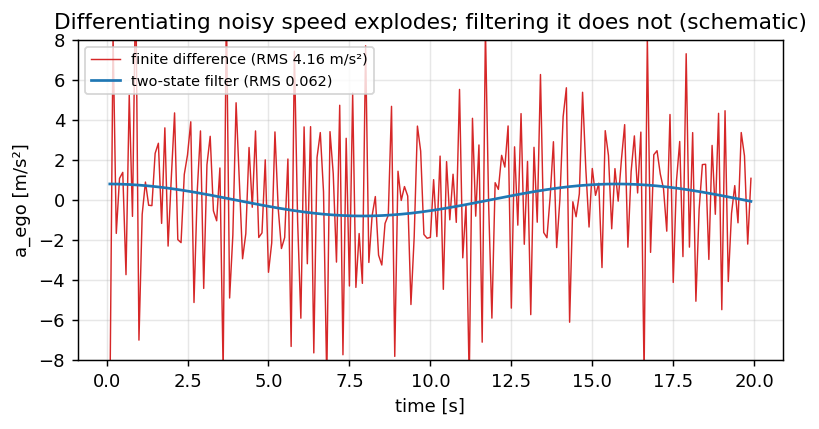

Localization: building an estimator one sensor at a time#
This chapter is written as a build, not as a description. We start with the cheapest possible estimate of
where the car is, find out what it cannot do, add one sensor, and repeat. Every step is a few lines you
can run, and every step corresponds to a switch in config.json — so you can turn a sensor off on the
real vehicle and watch the failure the text predicts.
step |
what we add |
what it fixes |
what it cannot do |
|---|---|---|---|
1 |
wheel speed + steering angle (bicycle model) |
a pose from nothing |
drifts without bound; needs the model to be right |
2 |
phone gyro as a yaw-rate measurement |
heading follows a sensor, not a model |
position still drifts; only helps if you fuse it correctly |
3 |
GPS position and course |
bounded position and heading |
hides errors in steps 1–2; nothing at all in a tunnel |
4 |
speed as a state, GPS velocity |
a correction that survives the next tick |
still cannot learn a scale error |
5 |
road roll from the lateral accelerometer |
separating a banked road from an understeering car |
0.65° after ten seconds of averaging, and no better; grade is still missing |
Read this chapter for the estimator, not for the steering
Nothing in the control path subscribes to localization/pose. The only subscriber is the debug egress,
and the lateral controller takes yaw rate straight from vehicle/chassis. That makes this the safest
place in the project to study an estimator: you can get it badly wrong and the car will not notice. It
also means every claim below had to be checked against GNSS rather than against “the car drove fine”.
Code anchors, in the order the chapter reaches them:
SpeedFilter(utils/speed_filter.h) — wheel speeds → speed and accelerationImuCalibrator/ImuCalibService— phone IMU → vehicle yaw rateGpsLocalProjector— lat/lon → East/North metersVehicleEKF/OnlineLocalizer/LocalizationService— fuse →localization/pose
Camera RPY for the Supercombo warp is a different story (Calibration); it only shares the mount prior with the IMU, and optionally feeds camera-odometry yaw rate into the EKF.
The switches you will use#
Every source is a separate key, because a fused estimate does not tell you which sensor is carrying it — and when several sources agree, a broken one hides behind the others.
"localization": {
"use_gps_position": true,
"use_gps_course": true,
"use_gps_velocity": true,
"use_imu_yaw_rate": true,
"use_chassis_yaw_rate": true,
"use_camera_odometry": true,
"use_bicycle_model": true
}
This is not a production feature — in the car you want all of them on. It is the instrument the rest of the chapter uses, and it is how the defect in step 2 was finally quantified: with GPS course on, the heading error was invisible; with it off, 38° in five seconds.
Step 0: frames, before anything else#
Half the bugs in this area are not estimation bugs, they are frame bugs. Fix the vocabulary first.
frame |
axes |
used for |
|---|---|---|
Local ENU |
\(x\) East, \(y\) North; origin = first GPS fix |
|
GPS bearing |
degrees clockwise from North (Android) |
course → ENU yaw |
Bicycle / vehicle |
planar yaw in ENU; \(\delta\) at the front axle |
EKF predict |
ISO vehicle |
\(y\) left+ |
camera mount prior |
Device / Supercombo |
\(y\) right+ |
lanes / camera odometry (see Coordinates) |
Same topic name, two payloads
Java publishes sensors/gps/location as a lat/lon proto. After proto_convert the same topic
name carries a typed GpsSample in ENU meters. Offline tools must know which side of the convert they
are reading. This has cost real debugging time more than once.
Step 1: the cheapest estimate — wheel speed and a steering angle#
Speed looks like the boring input. It is not, for two reasons: it scales the whole lateral chain (understeer enters as \(v^2\)), and the obvious way to compute acceleration from it is wrong.
Where it comes from#
ESP_02 carries four wheel speeds. The decoder averages them. Upstream then runs a two-state
(speed, acceleration) Kalman filter over that average — CarInterfaceBase.update_speed_kf in
flowpilot — and takes both vEgo and aEgo from the filter. We do the same, with one difference:
their gains are baked for a 100 Hz tick, ours are computed from the actual interval between frames,
because ESP_02 does not arrive on a metronome.
Why not just difference it#
Because the wheel-speed signal is quantised at 0.0075 km/h and the interval is ~10 ms. Differencing a quantised signal over a short interval amplifies the quantum by \(1/dt\). Measured on a real 28-minute run, the naive finite difference produced:
{kind=link}

Fig. 6 Differentiating noisy wheel speed explodes the acceleration; a two-state filter recovers it (schematic of the measured RMS 4.16 → 0.062 m/s²).#
finite difference |
two-state filter |
|
|---|---|---|
|
−3.85 / +3.80 m/s² |
−0.57 / +0.68 |
extremes |
−61.5 / +74.5 m/s² |
−4.0 / +3.1 |
RMS step between samples |
4.16 m/s² |
0.062 |
A car cannot change its acceleration by 4 m/s² in 10 ms. The field was quantisation noise wearing an acceleration label. Nothing read it, which is the only reason it did no harm — the lesson being that an unused signal is not a harmless signal, it is a trap set for whoever uses it next.
The filtered speed differs from the raw average by 0.010 m/s at the median, so nothing was distorted; only the noise that was being differentiated is gone.
import math
import numpy as np
QUANTUM = 0.0075 / 3.6 # ESP_VL_Radgeschw_02 resolution, m/s
class SpeedFilter:
"""Two-state (speed, accel) Kalman over the wheel-speed average. Mirror of speed_filter.h."""
def __init__(self, accel_process_noise=1.5, speed_noise=0.05, jump=2.0, factor=1.0):
self.qa, self.r, self.jump, self.factor = accel_process_noise, speed_noise**2, jump, factor
self.inited = False
def update(self, v_raw, dt):
z = v_raw * self.factor
if not self.inited or not dt > 0 or dt > 0.5 or abs(z - self.v) > self.jump:
self.v, self.a = z, 0.0
self.pvv, self.pva, self.paa = self.r, 0.0, 1.0
self.inited = True
return
self.v += self.a * dt # predict
q = self.qa**2 * dt
pvv = self.pvv + 2 * dt * self.pva + dt**2 * self.paa + q * dt**2 / 3
pva = self.pva + dt * self.paa + q * dt / 2
self.pvv, self.pva, self.paa = pvv, pva, self.paa + q
s = self.pvv + self.r # update on speed only
kv, ka = self.pvv / s, self.pva / s
innov = z - self.v
self.v += kv * innov
self.a += ka * innov
self.pvv, self.pva, self.paa = (1 - kv) * self.pvv, (1 - kv) * self.pva, self.paa - ka * self.pva
def quantise(v):
return round(v / QUANTUM) * QUANTUM
# Steady 20 m/s with a little road noise: what does each method call "acceleration"?
rng = np.random.default_rng(0)
f = SpeedFilter()
naive, filtered, prev = [], [], None
for _ in range(3000):
z = quantise(20.0 + rng.normal(0, 0.02))
if prev is not None:
naive.append((z - prev) / 0.01)
prev = z
f.update(z, 0.01)
filtered.append(f.a)
print(f"naive : |a| up to {max(abs(x) for x in naive):7.1f} m/s^2")
print(f"filtered : |a| up to {max(abs(x) for x in filtered[500:]):7.2f} m/s^2")
The wheel radius nobody calibrated#
Wheel speed is a circumference times a rate, so a worn or under-inflated tyre biases the whole signal by a constant. Checked against GNSS Doppler speed — which is good to centimetres per second on a 3D fix, far better than any tyre — on two runs:
run 08-06 |
run 08-04 |
|
|---|---|---|
CAN wheel / GNSS Doppler |
1.0117 |
1.0120 |
residual after removing the scale |
0.101 m/s |
0.066 m/s |
scale at 5–10 / 10–15 / 15–20 / 20–25 m/s |
1.022 / 1.011 / 1.011 / 1.013 |
1.013 / 1.013 / 1.015 / 1.011 |
CAN reads 1.2 % high, and the scale is flat across speed bands. That flatness is the whole
argument: slip would grow with load and speed, a failing sensor would not be this consistent, but a
wheel radius is a constant. SpeedFilter::Config::wheel_speed_factor exists for it, defaulting to 1.0
so the correction arrives as a deliberate change.
A 1.2 % speed error is not a 1.2 % problem
Understeer compensation is \(\kappa = \delta / (L(1 + K v^2))\) — speed enters squared. And the model metric scale reported elsewhere in this project as 0.888 was measured against wheel speed; against ground truth it is 0.899. When your reference is itself biased, every derived number inherits it.
Next: Gyro fusion